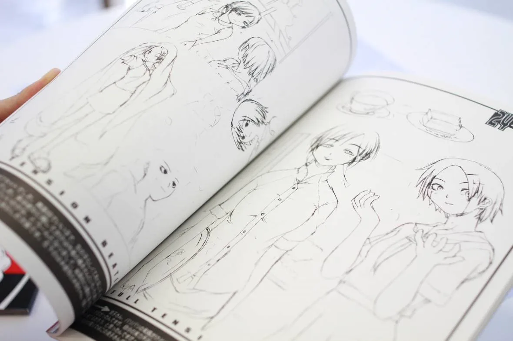
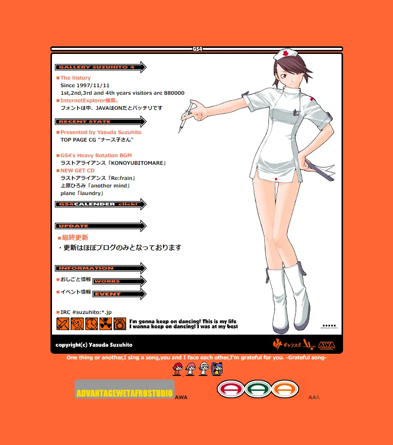
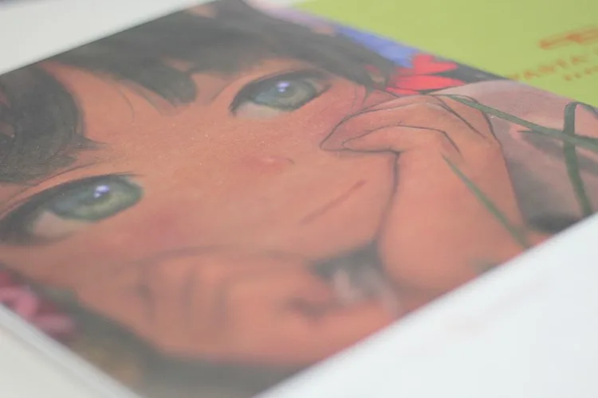
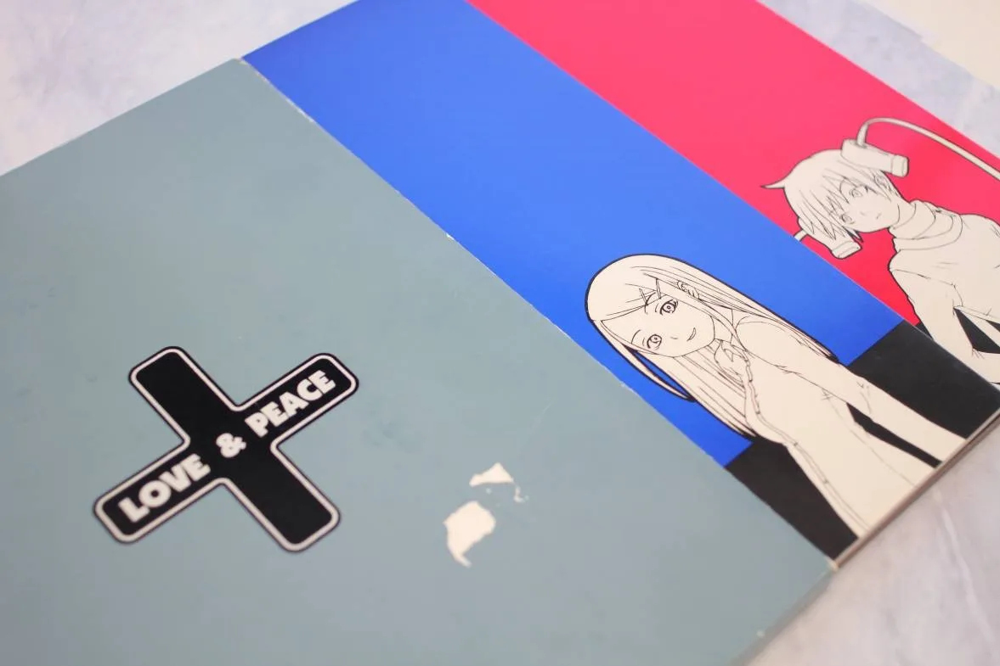
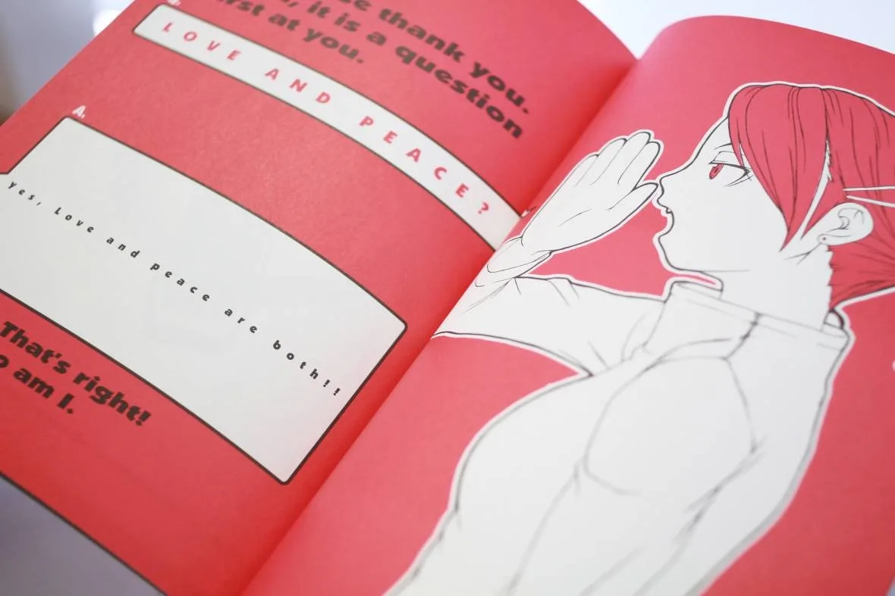
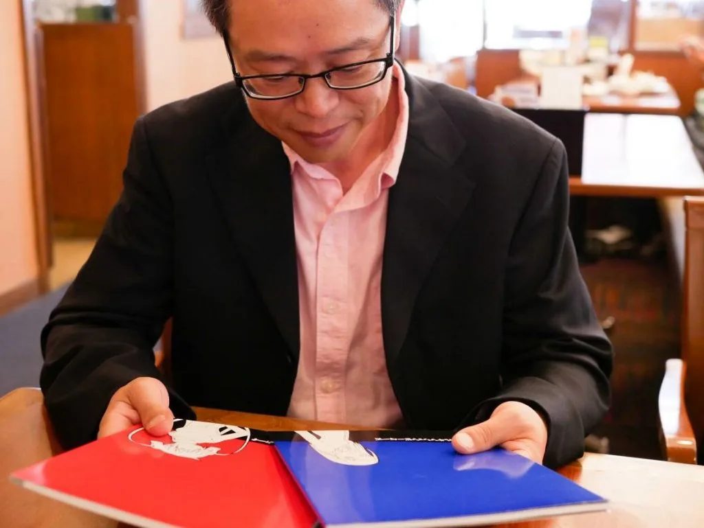
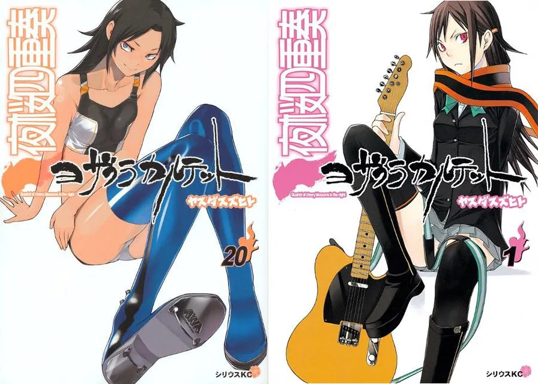
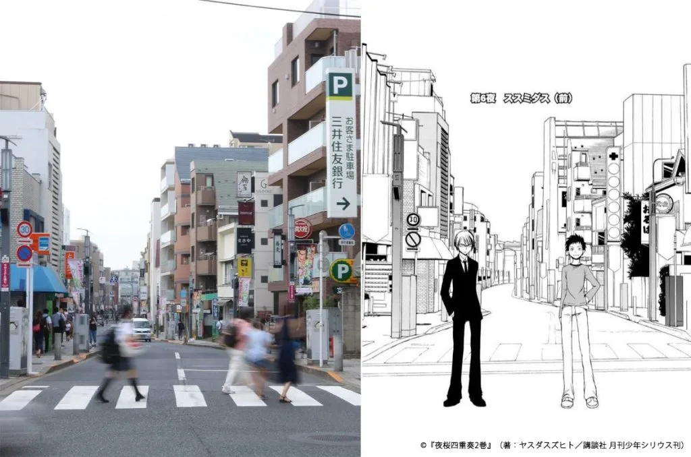
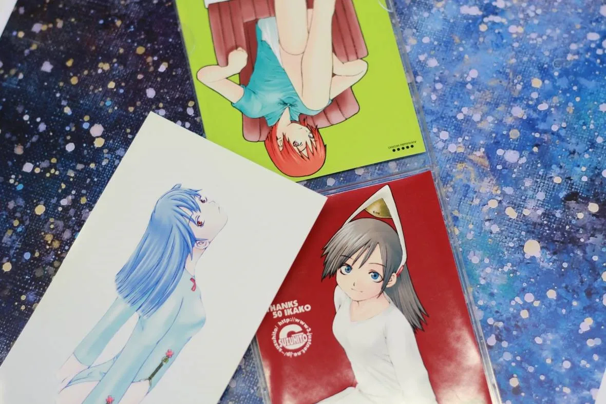

HOPE TALK
ヒット作を連発する漫画家・イラストレーターは、どのようにしてそのキャリアを築き上げてきたのでしょうか。
今回のホープトークでは、『夜桜四重奏〜ヨザクラカルテット〜』『デュラララ!!』『ダンまち』などのヒット作で知られる漫画家・イラストレーターのヤスダスズヒトさんにホープツーワンの印刷職人・出口竜が直撃インタビュー。
プロ作家になるまでの経緯や作品づくりへのこだわりを聞いてみました。
ヤスダスズヒト
漫画家・イラストレーター。
挿絵やキャラクターデザインを手がけるかたわら、2006年に『夜桜四重奏〜ヨザクラカルテット〜』（講談社『月刊少年シリウス』／1〜20巻発売中）にて漫画家デビューを果たす。連載11年となる『夜桜四重奏〜ヨザクラカルテット〜』のほか、成田良悟著『デュラララ!!』（ＫＡＤＯＫＡＷＡ 電撃文庫）、大森藤ノ著『ダンジョンに出会いを求めるのは間違っているだろうか』（SBクリエイティブ GA文庫）など、アニメ化作品も多数。
現在は雑誌、書籍、アニメ、ゲームなど幅広いメディアで活躍中。
公式ホームページ: http://www.suzuhito.com
出口竜
ホープツーワン本社工場に勤務する、入社二十云年のベテラン職人。
製本を経験してから印刷へ。
主に表紙多色刷を担当し、その後製版も学ぶ。
以下、質問は出口、回答はヤスダスズヒトさんです。
目次
・村田蓮爾先生のイラストに衝撃を受け、絵の世界へ！
・漫画家としてのキャリアはゼロからのスタートだった
・ひたすら描いて人に見てもらうことで道は拓ける！
・まとめ
村田蓮爾先生のイラストに衝撃を受け、絵の世界へ！

—ヤスダスズヒトさんが同人活動を始められたのは学生時代だとお聞きしていますが、当時からプロを目指していたのですか？
「絵を描き始めた頃は、プロになろうとは夢にも思っていませんでした。私が学生だった頃は、同人活動をする前にまずWEBで絵を発表するのが習わしでした。今でこそpixivやTumblr・Twitterといった制作活動に使える便利なツールがありますが、当時は自分でホームページをつくって作品をアップする人が多くて。それが楽しくなってきた人が、同人活動に移行していることが多かったですね。私が『プロを目指してみようかな』と考えるようになったのは、同人活動を始めてからですね。」

▲ヤスダスズヒトさんが同人活動をしていた時に作成されたホームページ。
http://www.suzuhito.com/
—絵を描き始めるきっかけは何だったのでしょうか？
「絵を描いてみたいと思い始めたのは、大学時代のことです。意外と遅いんですよ。
学生時代は広告関係の会社で AdobeのIllustratorやPhotoshopを使ったチラシづくりのアルバイトをしていたのですが、ある日右手を骨折して続行不能になってしまいました。
そのケガが治ってからも「せっかくIllustratorやPhotoshopを覚えたことだし、何かやりたいな」と考えていた頃に、雑誌『快楽天』（ワニマガジン社）の表紙になっていた村田（蓮爾）先生のイラストに出会いました。村田先生の絵の影響で『私も描いてみたい』と思うようになって、いざ描き始めたら、今度は描くことが楽しくなってしまって……といった感じです。」

▲ヤスダスズヒトさんが衝撃を受けた村田先生の作品。村田先生のインタビュー記事はこちら↓
https://hope21.jp/hopemedia/hopetalk/post_17/
—その後同人活動を始められるわけですが、ホープツーワンに印刷を発注しようと思われた理由は？
「同人イベントの関西コミティアで購入した村田先生の本の奥付で、ホープさんの名前を知りました。そこでホームページにアップしていたイラストをまとめて本にしてみようと思い立ち、原稿を持ってホープツーワンの窓口へ相談にいきました。それから5、6年の間にイラスト中心の同人誌を10冊ほどつくりました。」

—ヤスダスズヒトさんは２色刷りの本が多かったように記憶しています。本のほかにもカレンダーや下敷きをつくられていましたよね？
「そうですね。当時はアナログ入稿が主流の時代でしたが、２色刷りはデータのほうがいいと言われたので、アルバイトで覚えたIllustratorやPhotoshopを駆使してがんばりました。また、カレンダーはプラスチックケースを自分で買って持ち込んだ覚えがあります。下敷きは、それを入れるための封筒もつくっていただきました。」

▲「構図と余白の取り方が印象的なヤスダスズヒトさんのイラスト。2色使いにも同人誌時代からセンスが光っていました。」（出口）
—グッズのフォーマットもデータの雛形もない時代でしたから、いろいろ工夫されていましたよね。ヤスダスズヒトさんは入稿も早く、データも完璧でしたから、印刷作業がスムーズに運びました。
「それはホープさんの窓口の方がいろいろと教えてくださったからです（笑）。例えば『ここにこんな箔押しをしたい』というイメージを伝えると『それだと少し高くなるので、ここの紙をグレードダウンしましょうか』といった具合に、予算に合わせて相談に乗ってくれたんです。
同人時代に培った“作りたいものをイメージ通りの形にする”スキルのおかげで、現在は本の表紙デザインなどもさせていただいています。ホープさんには本当に感謝しています。」

「アナログ入稿が主流だった時代、2色刷りの印刷は大変な作業でしたが、いち早くデジタルを取り入れたヤスダスズヒトさんのデータ原稿はいつも完璧で、スムーズに進行させていただきました。印刷部数は300冊程度と意外に少なく、“これほど上手な作家さんが、こんな部数でいいの!?”と思った記憶があります。」（出口）
漫画家としてのキャリアはゼロからのスタートだった
▲『デュラララ!!』は、ヤスダスズヒトさんが初めてキャラクターデザインを担当した作品。のちにシリーズ化し、コミックやアニメ、WEBラジオなど複数のメディアで展開された。
※©『デュラララ!!』（著：成田良悟／ＫＡＤＯＫＡＷＡ 電撃文庫刊）
—プロになられた経緯を教えていただけますか？
「実はどの絵がプロとしての初仕事だったか、記憶から抜け落ちているんです（笑）たしか、同人活動を初めて数年が経った頃のことだと思います。当時はひたすら絵を描いて、それをファイルにまとめては、出版社に持ち込んで編集さんに見てもらっていました。そして絵がたまれば大阪から東京へ出向く。そんなことを繰り返すうちにイラストの発注が舞い込むようになり、その作品を見てくれた方から次の依頼が入るようになり……と、少しずつお仕事をいただけるようになりました。
とはいえ、すぐに一本立ちできたわけではなく、しばらくはアルバイトをしながらの生活が続きましたね。」
—ヤスダスズヒトさんからホープツーワンへの入稿が途絶えたと思ったら、『デュラララ!!』が話題になっていて驚きました。絵の仕事一本でいけるようになったのは、あの作品がきっかけですか？
「『デュラララ!!』も一端を担っているとは思いますが、私の生活を劇的に変えたのは、漫画家デビュー作『夜桜四重奏〜ヨザクラカルテット〜』でした。
と言っても、漫画家としての私の経歴は特殊で、漫画賞などに応募して審査に通ったわけではなかったんです。きっかけは「君はなんとなく漫画が描けそうだからやってみない？」という担当編集の一言。うれしい提案ではあったものの、ひたすらイラストだけを描き続けてきた私には、漫画独特の文法なんてまったくわかりません。担当と揉めに揉めつつ『夜桜四重奏』の第1話が描き上がったのは、提案されてから1年後のことでした。連載開始後も担当のサポートが続いて、好きなように描けるようになったのは、随分後のことです。」

▲ヤスダスズヒトさんの漫画家デビュー作にして代表作となった『夜桜四重奏 〜ヨザクラカルテット〜』は、現在も講談社『月刊少年シリウス』で大ヒット連載中。
※左：©『夜桜四重奏20巻』（著：ヤスダスズヒト／講談社 月刊少年シリウス刊）
※右：©『夜桜四重奏1巻』（著：ヤスダスズヒト／講談社 月刊少年シリウス刊）
—連載開始までの1年間、どんな思いで描き続けたのでしょうか？
「『他がダメでも絵で勝負すればいい』というわけのわからない自信を持って描いていました。『担当が私に声をかけてくれたのは、絵に魅力を感じてくれていたからだ』と思っていたのが自信の理由のひとつなのですが、今振り返るととんでもなく下手くそです（笑）。あとは描きながら漫画を勉強していけばどうにかなると信じて、がむしゃらに続けましたね。楽天的な性格も幸いしたのかもしれません。」
—ヤスダスズヒトさんが考える漫画の勉強とは？
「ひたすら漫画を読むことですね。過去の名作でも話題作でもいいと思います。今でも勉強は続けています。」
—たくさんの漫画を読むなかで、影響を受けた作品はありましたか？
「藤子・F・不二雄先生の作品です。子どもの頃から、あの“すっとぼけ感”がたまらなく好きで。あの感じを理論として把握できたのは大人になってからですが、漫画を描くときは常に意識しています。私の作品の根底にあればいいな、と思いながら描いています。」
—イラストやキャラクターデザインのこだわりはありますか？
「イラストやキャラクターデザインについては、それぞれ違ったこだわりを持っています。
雑誌や書籍などの表紙イラストの場合は、どこかに違和感を残すように心がけていますね。きれいにまとめてしまうと書店に並んだときに目立たないので、「え？」と引っかかるようなポイントをつくるんです。私は表紙はイラストだけではなく、デザインもできるだけ担当させてもらっています。ビジュアルをトータルでコントロールしたいので。実はそこで広告代理店のアルバイト時代に得たスキルが役立っています。
キャラクターデザインでは、文章から拾い上げた印象に、そこには描かれていない特徴をプラスするようにしています。例えば『デュラララ!!』の主人公セルティのヘルメットの猫耳は、文章中にはありませんでした。でも、ふつうに描いても印象付けるのは難しいと思ったので、著者の成田先生に『こんなのどうですか？』と提案させていただいた記憶があります。」
▲「デュラララ!!」の主人公セルティ。※デュラララ!! SH2
ひたすら描いて人に見てもらうことで道は拓ける！
—描き続けてよかった、と手応えを感じるのはどんな瞬間ですか？
「やはり現物が完成したときですね。それは同人作家の頃から変わりません。きれいに印刷されていれば、なおうれしいです。あとはいい絵が描けたとき。私自身が常に「面白いものを描こう」と思いながら挑んでいるので、いい絵が描けたとき＝最新刊を描いたときと言えるように、日々精進したいですね。」

▲夜桜四重奏のワンシーンのモデルスポット（左）とヤスダスズヒトさんのイラスト。目に映したものがイラストになり、やがて単行本になる達成感はひとしお。
—目標としていることがあれば、教えてください。
「『40年間この仕事で食べていくこと』でしょうか。そのためにも、目の前に立ちはだかる壁を超えつつ、ハズレなしで描き続けていきたいなと思っています。」
—今のヤスダスズヒトさんにも壁と感じるものがあるんですか!?
「もちろんあります。私は今でも人体がきちんと描けませんから。特に苦手なのが、肩と首。どれだけ描いても納得はいかないんですよ。村田先生がやっていらっしゃる大学の授業に出たいと思っているくらい（笑）。」
—最後にそんなヤスダスズヒトさんから、プロを目指す方々に一言メッセージをお願いします。
「絵の仕事で生活していきたいと思ったら、ひたすら描くことが大切だと思います。『そんな根性論は過去のもの、今の時代は違う』といったツイートを見かけることがありますが、最後はやはり根性だと思います。とにかく描いて、pixivやTwitterでたくさんの人に見てもらってください。反応があればテンションも上がって、さらなる創作意欲につながりますから。」

まとめ
ヤスダスズヒトさんの穏やかな話し口調からは、下積み時代の苦労はさほど伝わってきませんでした。ただ、「ホームページを立ち上げてすぐの頃は、1日2枚のカラー絵をアップするという謎のノルマを課していましたが」と笑うだけ。
そんな穏やかな口調の裏に潜む、メラメラと燃える創作への情熱。たゆまぬ努力、そしてそれを支えるクリエイター魂に、プロとして成功するための秘訣を見た気がしました。
ヤスダスズヒト先生
漫画家・イラストレーター。挿絵やキャラクターデザインを手がけるかたわら、2006年に『夜桜四重奏〜ヨザクラカルテット〜』（講談社『月刊少年シリウス』／1〜20巻発売中）にて漫画家デビューを果たす。連載11年となる『夜桜四重奏〜ヨザクラカルテット〜』のほか、成田良悟著『デュラララ!!』（ＫＡＤＯＫＡＷＡ 電撃文庫）、大森藤ノ著『ダンジョンに出会いを求めるのは間違っているだろうか』（SBクリエイティブ GA文庫）など、アニメ化作品も多数。現在は雑誌、書籍、アニメ、ゲームなど幅広いメディアで活躍中。 公式ホームページ: http://www.suzuhito.com